10. Routes
Praktikum – Bagian 1: Configure the routes
- Buat project baru yang berisi komponen posts (praktikum http service), form-member (soal uts), navbar, not-found, home
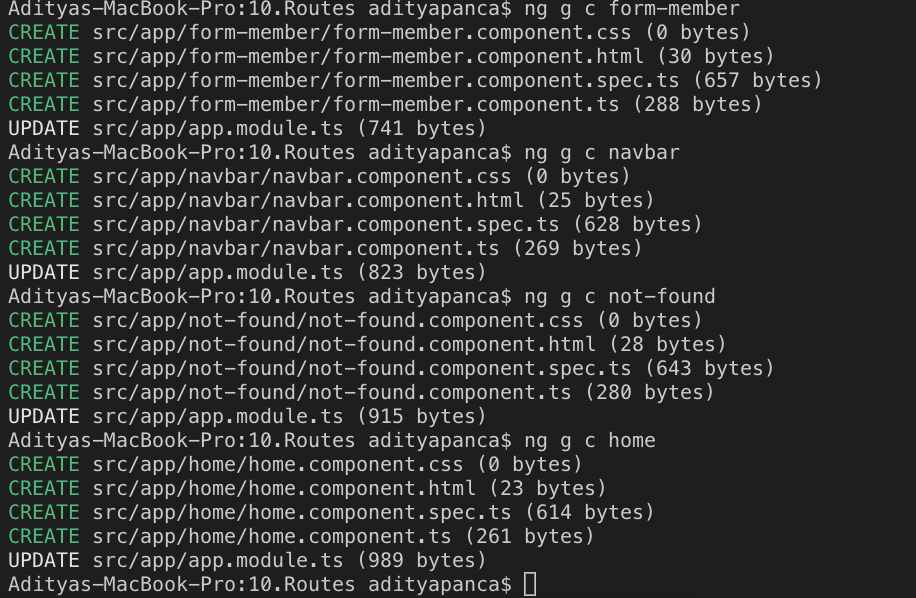
- Buka file app.module.ts. Pastikan komponen pada langkah 1 sudah terdaftar seperti gambar dibawah ini
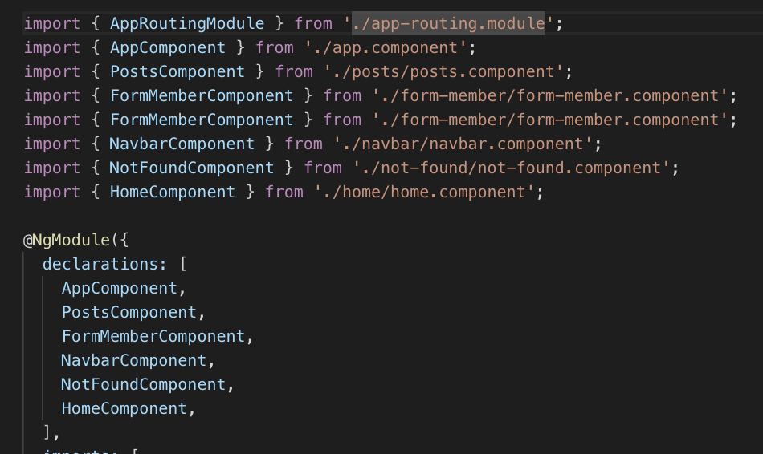
- Tambahkan module router pada halaman app.module.ts seperti gambar dibawah ini:
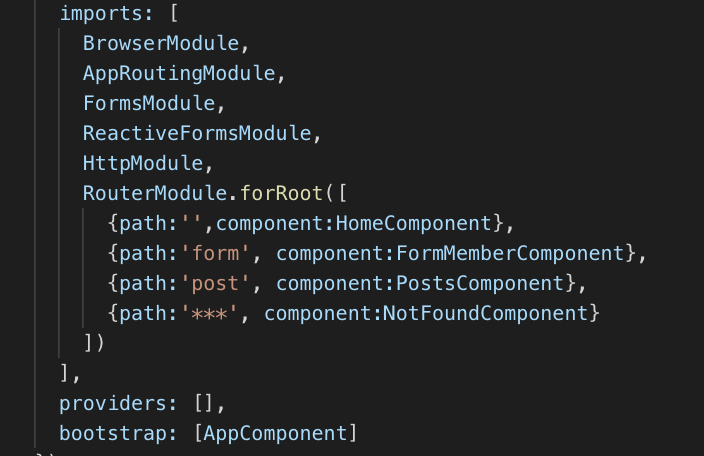
- Buka halaman navbar.component.html dan tambahkan kode dibawah ini:
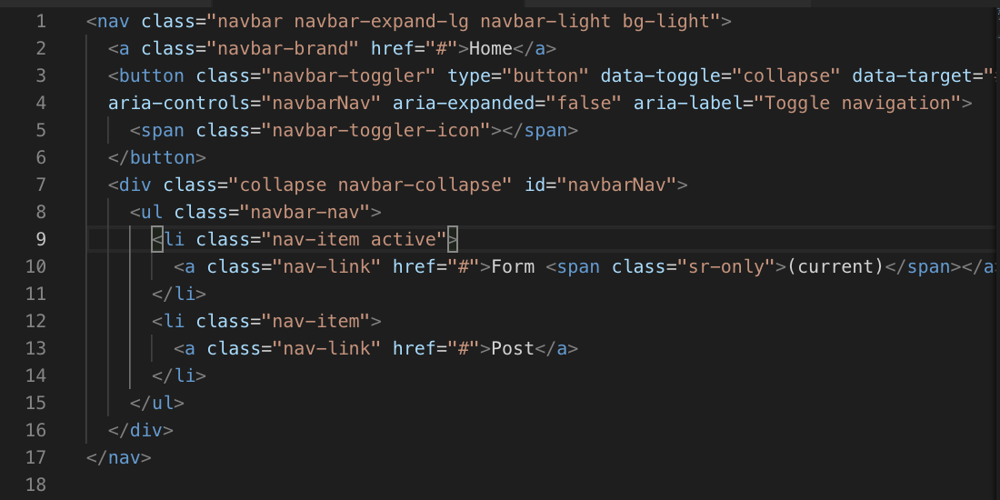
- Buka halaman app.component.html. tambahkan kode dibawah ini:
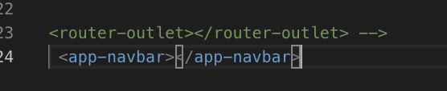
- hasilnya
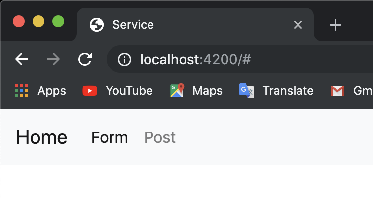
Praktikum - Bagian 2 : Router Outlet
- Buka halaman app.component.html dan rubah menjadi seperti dibawah ini:
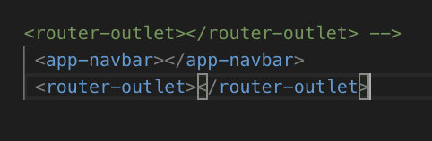
- Jalankan dan inspect elemen seperti pada gambar dibawah ini
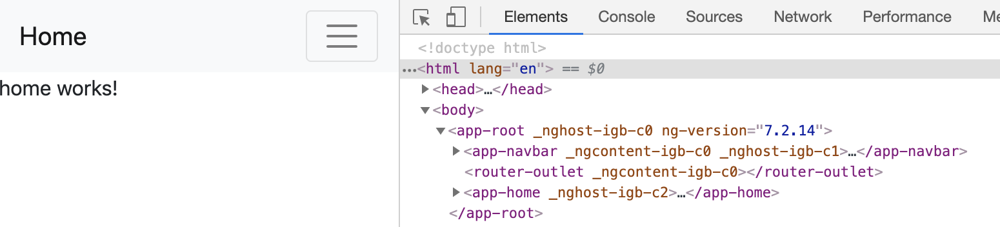
- Jalankan link dibawah ini localhost:4200/form seperti gambar dibawah ini:
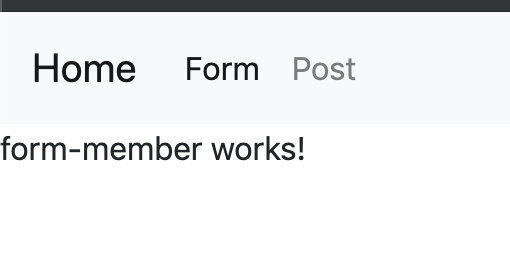
- Jalankan link dibawah ini localhost:4200/post seperti gambar dibawah ini:
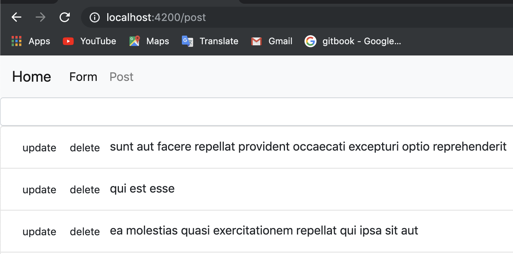
- Jalankan link dibawah ini localhost:4200/coba seperti gambar dibawah ini:
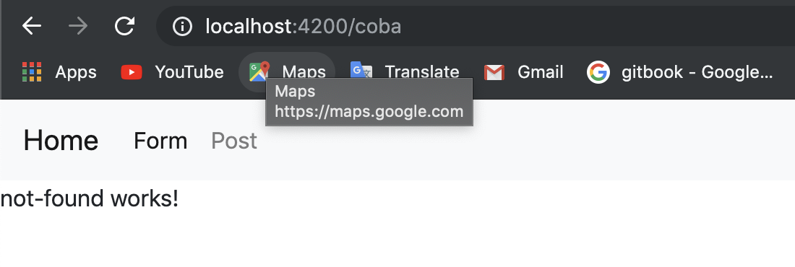
Praktikum - Bagian 3 : Add Link
- Buka halaman navbar.component.html. tambahkan link pada href tiap menu seperti gambar dibawah ini:
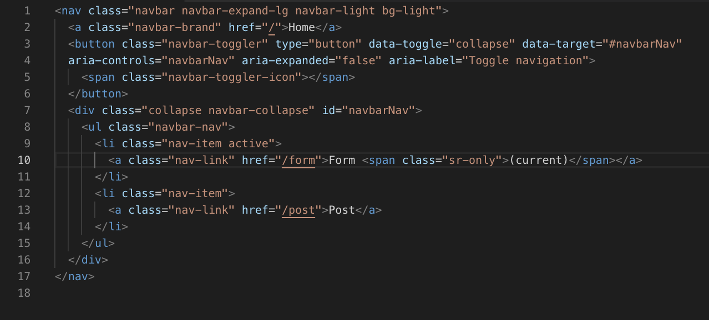
- hasilnya
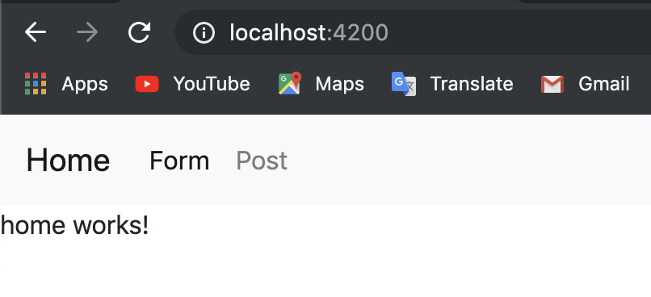
- Modifikasi href menjadi routerLink pada halaman navbar.component.html seperti gambar dibawah ini
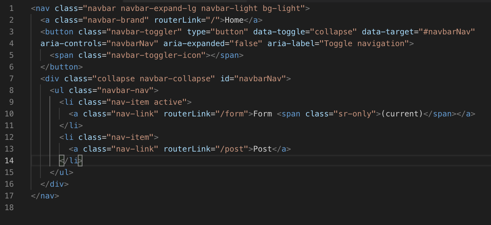
- hasilnya
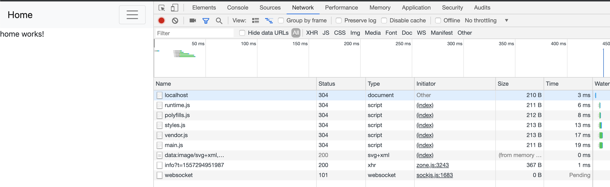
- Modifikasi class li pada halaman navbar.component.html menjadi seperti pada gambar dibawah ini:
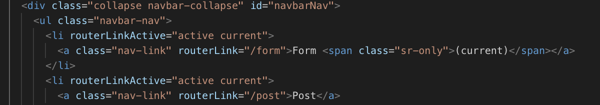
- hasilnya
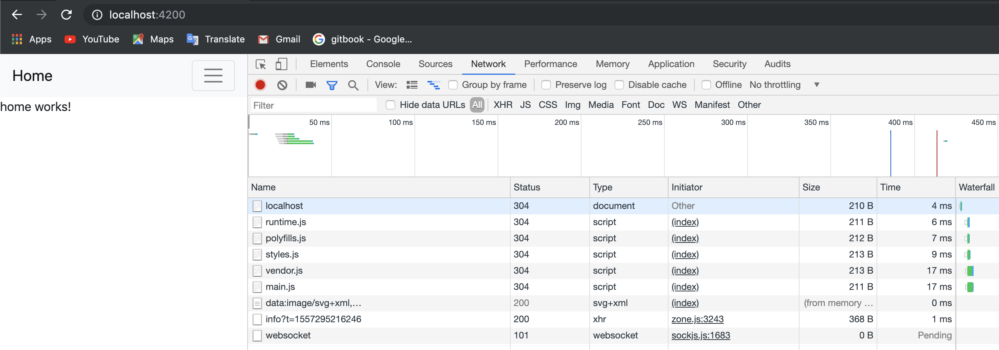
Praktikum - Bagian 4 : Accesing Route Parameter
- Buka app.module.ts dan tambahkan route untuk profile seperti gambar dibawah ini:
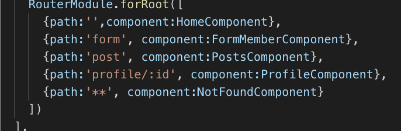
- Modifikasi halaman home.component.html menjadi seperti gambar dibawah ini:
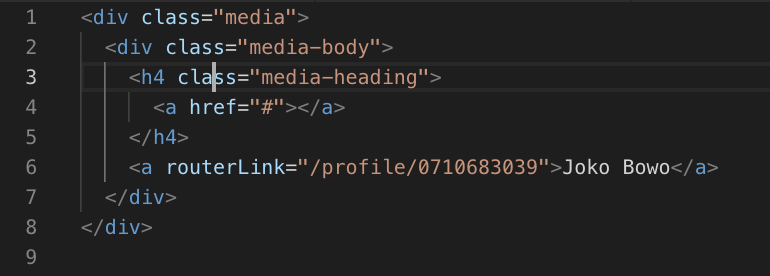
- Modifikasi file profile.component.ts menjadi seperti pada gambar dibawah ini:
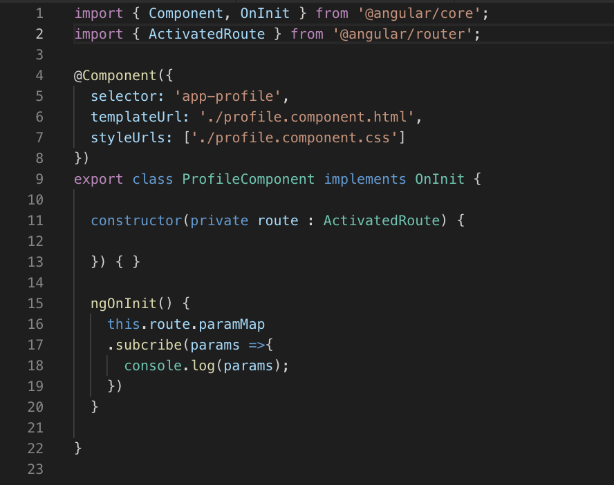
- Jalankan, klik tombol home kemudian kliklink joko bowo kemudia inspect element seperti dibawah ini:
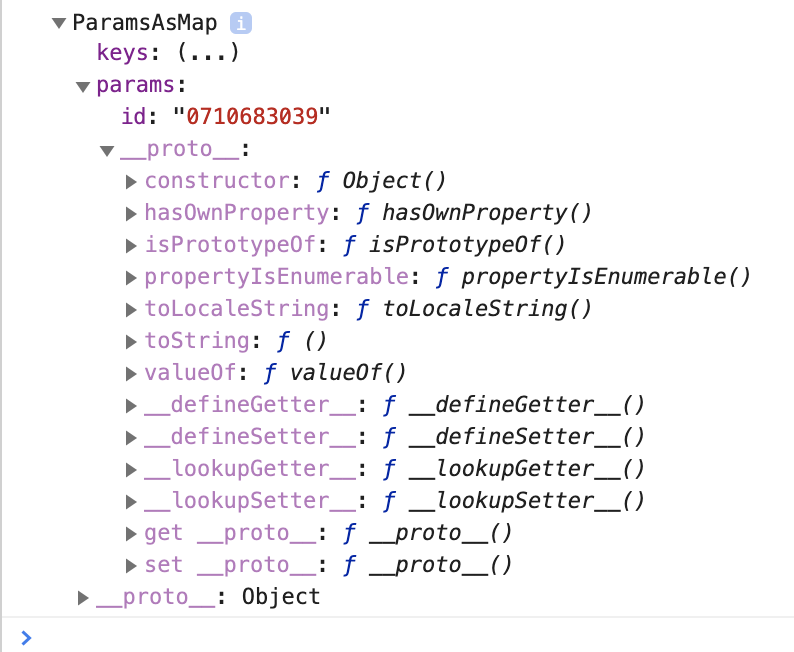
- Modifikasi file profile.component.ts menjadi seperti pada gambar dibawah ini:
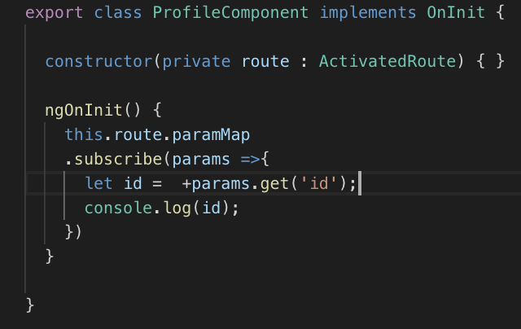
- Jalankan, klik tombol home kemudian klik link joko bowo kemudia inspect element. Catat dan berikan penjelasan (Soaln No. 11)
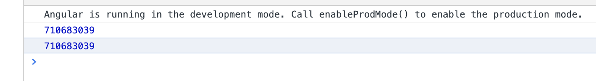